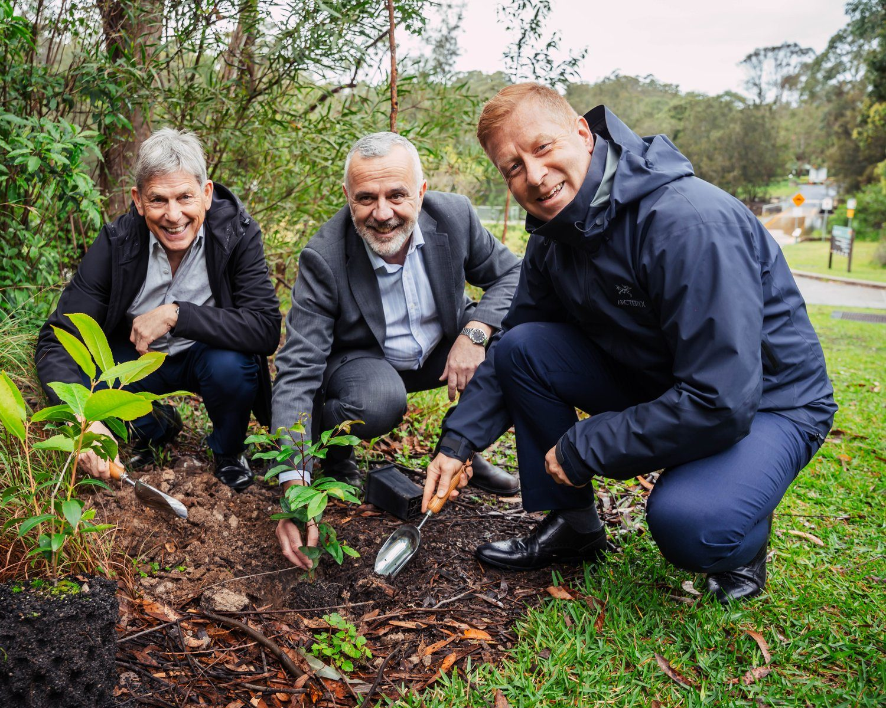

For corporates
Make nature a strategic part of your business.
We deliver measurable conservation outcomes for your sustainability and nature commitments, and bring your people into the work through volunteering, workplace giving and staff engagement.
Corporate partnerships →